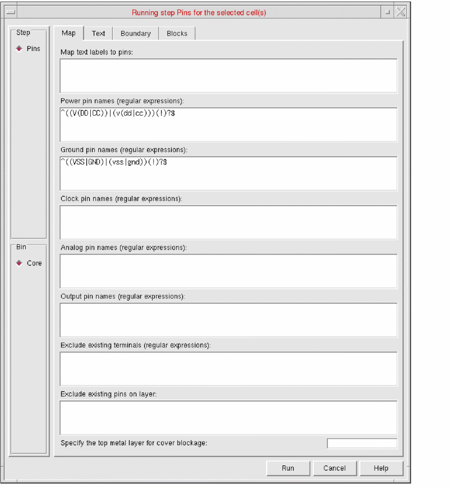
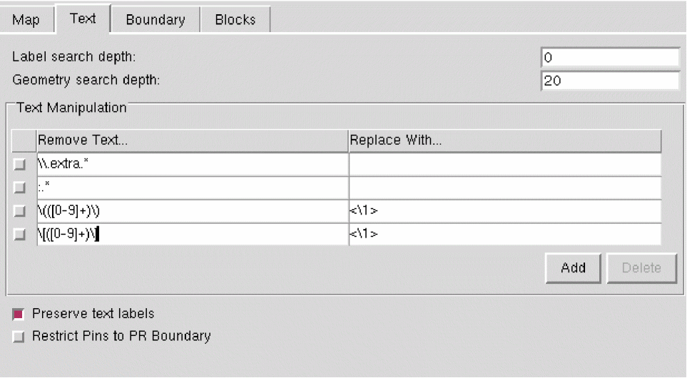

Customizing Text Labels for Abstract Generation
为抽象生成自定义文本标签
To customize text labels in the Standalone Abstract Generator:
要在独立版抽象生成器中自定义文本标签：
-
Select one or more cells in the main window and choose Flow – Pins, or click the Pins icon.
在主窗口中选择一个或多个单元，然后选择 Flow – Pins，或点击 Pins 图标。
The Running step Pins form is displayed.
将显示 Running step Pins 表单。 -
Select the Text tab.
选择 Text 选项卡。

-
In the Label search depth field, specify a value to control how far down the design hierarchy does Abstract Generator search for text labels during text-to-pin mapping.
在 Label search depth 字段中指定一个值，用于控制在 text-to-pin 映射期间，抽象生成器在设计层级中向下搜索文本标签的深度。 -
In the Geometry search depth field, specify a value to control how far down the design hierarchy does Abstract Generator search for metal underneath a text label.
在 Geometry search depth 字段中指定一个值，用于控制抽象生成器在设计层级中向下搜索文本标签下方金属图形的深度。 -
In the Text Manipulation table, specify the expression to be replaced in the Remove Text column and the text to be replaced with in the Replace With column.
在 Text Manipulation 表中，在 Remove Text 列指定要被替换的表达式，在 Replace With 列指定用于替换的文本。 -
Enter the following in the Text Manipulation fields to change parenthesis,
(),to angle brackets,<>,for the label(Y),
要将标签(Y)中的圆括号(),替换为尖括号<>,，请在 Text Manipulation 字段中输入如下内容：
Remove Text...
移除文本...Replace with...
替换为...Result
结果 -
Click Add to add a new row to the table.
点击 Add 向表中添加新行。 -
Click Delete to delete the selected rows from the table.
点击 Delete 删除表中选中的行。 -
Select Preserve text labels to retain all existing pins in the layout, along with their labels, irrespective of whether the pins were created by Abstract Generator during the Abstract step.
选择 Preserve text labels 以保留版图中所有现有引脚及其标签，而不管这些引脚是否由抽象生成器在 Abstract 步骤中创建。 -
Select Restrict Pins to PR Boundary to control the geometry of N-Well pins created during the abstract generation process.
选择 Restrict Pins to PR Boundary 用于控制抽象生成过程中创建的 N-Well 引脚几何形状。 -
Click Run.
点击 Run。
The Percent Complete message box reports the progress of the step.
Percent Complete 消息框会报告该步骤的进度。
The customized text labels are generated in the layout.
自定义后的文本标签会在版图中生成。
Set the t to generate additional pins from labels, even if the corresponding net has existing pins in layout.
将 t，即使对应 net 在版图中已存在引脚，也会从标签生成额外的引脚。
Related Topics
相关主题
Return to top